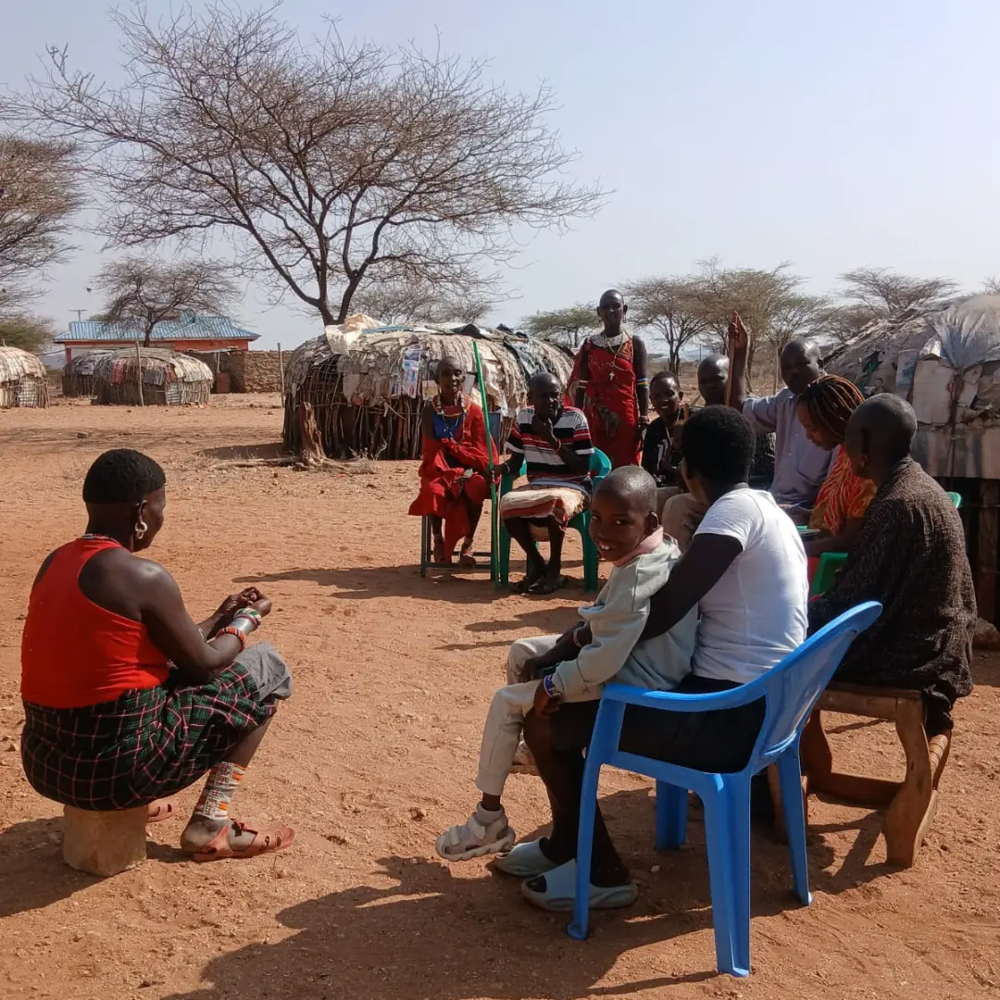
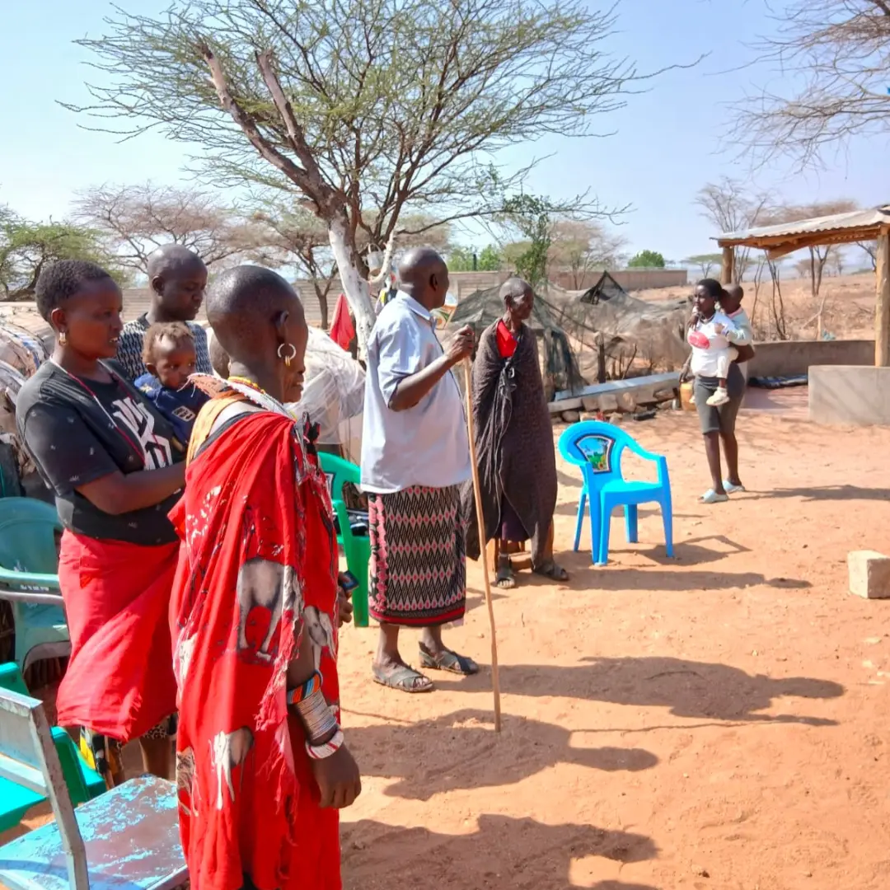

01 / WATER & CLIMATE
Water Security & Climate Resilience
Rainwater harvesting, water storage, drought preparedness, tree planting and environmental conservation.
Explore focus area →COMMUNITY FIRST. FUTURE FOCUSED.
We believe lasting change begins when communities have the tools, opportunities and support to shape their own future.
“Resilient Communities, Brighter Futures.”
WHY WE EXIST
Northern Resilience Initiatives is a community-based organization dedicated to improving the lives of people in Northern Kenya. We work closely with local communities to identify their needs and implement sustainable initiatives that improve access to education, water security, women’s and youth empowerment, environmental conservation, and sustainable livelihoods.
Northern Kenya continues to face recurring drought, water scarcity, and the effects of climate change, which have a significant impact on women, children, youth, and vulnerable households. Through our programmes, we aim to help communities address these challenges and build a more sustainable future.
Get to know us →To work alongside communities in Northern Kenya to improve lives through education, water security, youth and women’s empowerment, environmental conservation, and sustainable development initiatives that create lasting positive change.
To see thriving communities in Northern Kenya empowered to overcome challenges, harness opportunities, and build a sustainable future for present and future generations.


Rainwater harvesting, water storage, drought preparedness, tree planting and environmental conservation.
Explore focus area →Skills development, entrepreneurship, savings groups, leadership and employment readiness.
Explore focus area →Girls’ education, mentorship, menstrual hygiene support, health awareness and emergency drought response.
Explore focus area →Sustainable development is strongest when local voices lead the strategy.

BETTER TOGETHER
From water access and livelihoods to community leadership, we work hand-in-hand with local people to create solutions that last.
Join the work ↗LET'S MAKE PROGRESS POSSIBLE